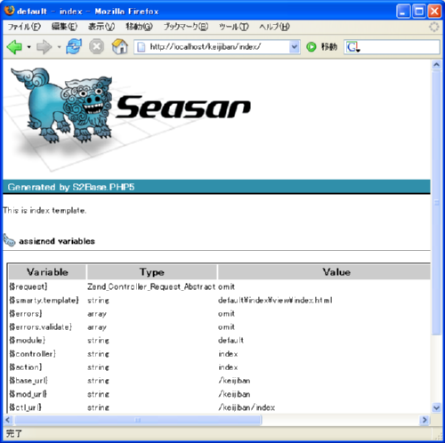
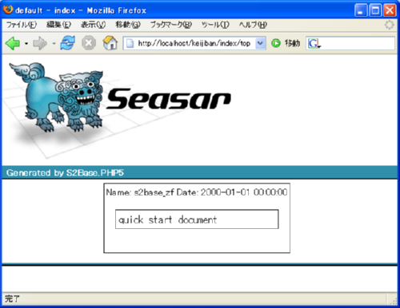
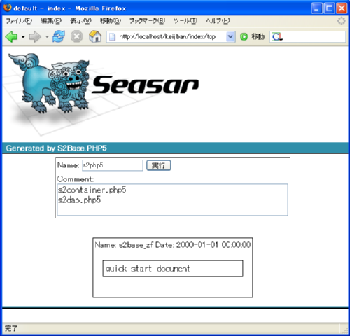
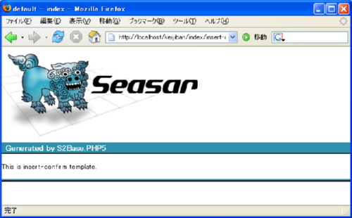
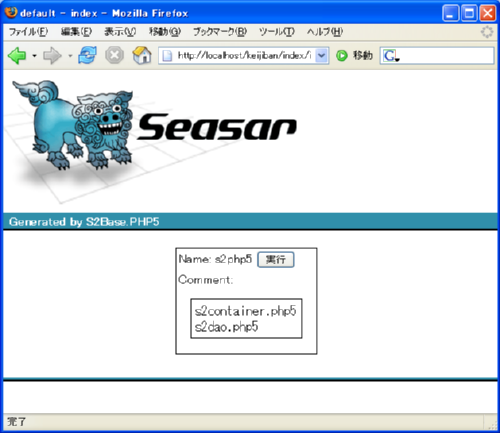
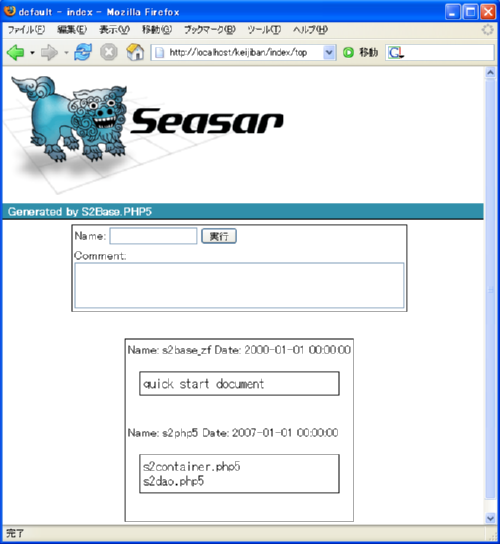
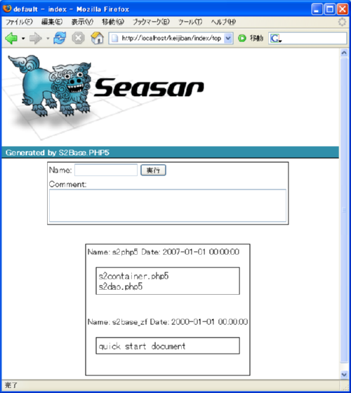
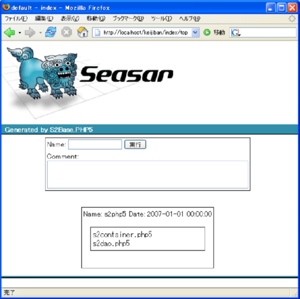

はじめに
クイックスタートとして簡易掲示板を作成してみます。 簡易掲示板では書き込みを行う際に確認ページを表示します。
プロジェクトの作成
s2base コマンドでプロジェクトを作成します。
- プロジェクトディレクトリ : /seasar.php/sample/start
- Base URL : http://localhost/keijiban/
% s2base /seasar.php/sample/start zf ・・・ %
.htaccess の編集
上記で作成したプロジェクトディレクトリの /seasar.php/sample/start/public ディレクトリを WEB サーバで 公開します。Base URLを「 /keijiban 」としたので、publicディレクトリにある .htaccess で RewriteBase を設定します。
/seasar.php/sample/start/public/.htaccess
RewriteEngine on
RewriteBase /keijiban <--- 追記
RewriteCond %{SCRIPT_FILENAME} !-f
RewriteCond %{SCRIPT_FILENAME} !-d
RewriteRule ^(.*)$ z.php/$1
モジュールとコントローラを生成する
掲示板用のモジュールとコントローラを生成します。
- モジュール : 使用しない ( default )
- コントローラ : index
% cd /seasar.php/sample/satrt % phing ・・・ [ Command list ] 0 : (exit) 1 : action 2 : dao 3 : entity 4 : goya 5 : interceptor 6 : model 7 : module & controller 8 : service choice ? : 7 <-- モジュール作成コマンドを選択 [ Module list ] 0 : (exit) 1 : (new module) 2 : default choice ? : 2 <-- default モジュールを選択 controller name ? : index <-- コントローラ名を index とします。 [ generate information ] module name : default controller name : index controller class name : IndexController controller interface name : IndexService confirm ? (y/n) : y ・・・ [ Command list ] 0 : (exit) ・・・ choice ? : 0 %
index コントローラにアクセスする
http://localhost/keijiban/index をブラウザで閲覧すると、次のような index ページが表示されます。
データベースのセットアップ
データベースには Sqlite を使用します。次のような keijiban テーブルを作成します。 作成するデータベースファイルは、プロジェクトディレクトリの var ディレクトリに保存します。
create table keijiban (
id integer primary key,
name text,
comment text,
timestamp text
);
insert into keijiban values(1, 's2base_zf', 'quick start document', '2000-01-01 00:00:00');
データベースの作成
% cd /seasar.php/sample/start/var % sqlite start.db SQLite version 3.3.14 Enter ".help" for instructions sqlite> create table keijiban ( ...> id integer primary key, ...> name text, ...> comment text, ...> timestamp text ...> ); sqlite> insert into keijiban values(1, 's2base_zf', 'quick start document', '2000-01-01 00:00:00'); sqlite> *** サンプルデータを 1つ用意して下さい *** %
PDO ダイコンの設定
上記で作成した start.db を pdo.dicon ファイルに設定します。 pdo.dicon ファイルは、プロジェクトディレクトリの app/commons/dicon/pdo.dicon にあります。 デフォルトでは、MySQL用の dataSource コンポーネントが有効となっています。MySQL用の設定はコメントアウトし、 次の設定に置き換えます。
<component name="dataSource" class="S2Container_PDODataSource">
<property name="dsn">return 'sqlite:' . S2BASE_PHP5_ROOT . '/var/start.db'</property>
</component>
トップページの作成
Goya コマンド
掲示板のトップページを アクション名 : top として goya コマンドで作成します。
% phing ・・・ [ Command list ] 0 : (exit) 1 : action 2 : dao 3 : entity 4 : goya 5 : interceptor 6 : model 7 : module & controller 8 : service choice ? : 4 <-- goya コマンドを選択 [ Module list ] 0 : (exit) 1 : default choice ? : 1 <-- モジュールを選択 [ Controller list ] 0 : (exit) 1 : index choice ? : 1 <-- コントローラを選択 action name ? : top <-- アクション名を top とします。 use dao ? (y/n) : y <-- データベースにアクセスするので yes use database ? (y/n) : y <-- データベースから情報を取得するので yes [ table list ] 0 : (exit) 1 : keijiban choices ? (1,2,--,) : 1 <-- テーブルを選択 dao interface name [KeijibanDao]? : <-- dao 名を入力します。デフォルトの場合はリターンのみ entity class name ? [KeijibanEntity] : <-- entity 名を入力します。デフォルトの場合はリターンのみ [ generate information ] module name : default controller name : index action name : top format action name : Top action method name : topAction action dicon file name : topAction.dicon action template file : top.html service interface name : TopService service class name : TopServiceImpl service test class name : TopServiceImplTest service dicon file name : TopServiceImpl.dicon dao interface name : KeijibanDao dao test class name : KeijibanDaoTest entity class name : KeijibanEntity table name : keijiban columns : id, name, comment, timestamp confirm ? (y/n) : y ・・・ [ Command list ] 0 : (exit) ・・・ choice ? : 0 %
http://localhost/keijiban/index/top をブラウザで閲覧すると、次のような トップページが表示されます。
サンプルで入力したデータが表示されます。
一覧表示
goya コマンドで自動生成されたテンプレートファイルを編集して、名前と時間とコメントを表示します。 自動生成されたテンプレートファイルは、app/modules/index/view/top.html になります。次のようなテーブル表示に置き換えます。
<tbody>
{foreach from=$dtos item=row}
<tr><td>Name: {$row->getName()|escape} Date: {$row->getTimestamp()|escape}</td></tr>
<tr><td><pre>{$row->getComment()|escape}</pre><br></td></tr>
{/foreach}
</tbody>
http://localhost/keijiban/index/top をブラウザで再度閲覧すると、次のような トップページが表示されます。
入力フォームの追加
トップページに次のような名前とコメントを入力するフォームを追記します。
<form action="{$ctl_url}/insert-confirm">
<table class="list"><tbody>
<tr><td>
Name: <input type="text" name="handle" value="" maxlength="10"/>
<input type="submit"/>
</td></tr>
<tr><td>
Comment: <br><textarea name="comment" cols="50" rows="2"></textarea>
</td></tr>
</tbody></table>
</form>
http://localhost/keijiban/index/top をブラウザで再度閲覧すると、次のような トップページが表示されます。
確認ページの作成
入力フォームのアクションに設定したアクション名 : insert-confirm で Action コマンドを実行します。
Action コマンド
% phing ・・・ [ Command list ] 0 : (exit) 1 : action 2 : dao 3 : entity 4 : goya 5 : interceptor 6 : model 7 : module & controller 8 : service choice ? : 1 <-- アクションコマンドを選択 [ Module list ] 0 : (exit) 1 : default choice ? : 1 <-- モジュールを選択 [ Controller list ] 0 : (exit) 1 : index choice ? : 1 <-- コントローラを選択 action name ? : insert-confirm <-- アクション名を入力 [ generate information ] module name : default controller name : index controller class name : IndexController action name : insert-confirm action method name : insertConfirmAction action dicon file : insertConfirmAction.dicon action template file : insert-confirm.html confirm ? (y/n) : y ・・・ [ Command list ] 0 : (exit) ・・・ choice ? : 0 %
この状態で、入力フォームの Submit ボタンを選択すると、 insert-confirm アクションのテンプレートファイルが表示されます。
アクションメソッドの編集
module & controller コマンドで作成されたアクションコントローラファイルは、 app/modules/default/IndexController.php になります。 IndexController.php には insertConfirmAction メソッドが追加されているので、insertConfirmAction メソッドを実装します。
class IndexController extends Zend_Controller_Action {
・・・
public function insertConfirmAction(){
$dto = new KeijibanEntity(); // DTOを生成し、
$dto->setName($this->getRequest()->getParam('handle')); // リクエストパラメータをセットします。
$dto->setComment($this->getRequest()->getParam('comment'));
$this->view->assign('dto', $dto); // ビューに DTO をセットします。
$sn = new Zend_Session_Namespace('start_insert'); // セッションにも DTO を保存します。
$sn->dto = $dto;
}
・・・
}
テンプレートファイルの編集
入力フォームで受け取った情報を表示する確認ページを作成します。
<form action="{$ctl_url}/insert">
<table class="list">
<tbody>
<tr><td>Name: {$dto->getName()|escape} <input type="submit"/></td></tr>
<tr><td>Comment: <br><pre>{$dto->getComment()|escape}</pre></td></tr>
</tbody>
</table>
</form>
この状態で入力フォームの Submit ボタンを選択すると、次のような確認画面が表示されます。
リクエストの検証
入力フォームからのリクエストデータを検証します。設定ファイルはコントローラディレクトリの validate ディレクトリに アクション名.ini ファイルで生成されています。insert-confirm.ini に次のような設定を記述します。
app/modules/default/index/validate/insert-confirm.ini
[default]
action = "top" <-- 検証に失敗した場合のアクションを top とします。
[handle : default] <-- handle パラメータの設定セクション
validate = "regex"
regex.pattern = "/^\w{1,10}$/"
[comment : default] <-- comment パラメータの設定セクション
validate = "regex"
regex.pattern = "/^.{1,100}$/s"
検証に失敗した場合はトップページに遷移します。
検証エラーの表示
リクエストパラメータの検証に失敗した場合にトップページに遷移します。トップページの先頭に次のように 検証エラーを表示します。検証エラーは、$errors['validate'] 配列に設定されています。
<font color="red">
{foreach from=$errors.validate item=val key=key}
{$key|escape} : {$val.msg|escape}
{/foreach}
</font>
handle パラメータに「 Seasar.PHP 」と入力した場合は、次のような検証エラーメッセージが表示されます。

データベースに保存
確認フォームのアクションに設定したアクション名 : insert で Goya コマンドを実行します。
Goya コマンド
% phing ・・・ [ Command list ] 0 : (exit) 1 : action 2 : dao 3 : entity 4 : goya 5 : interceptor 6 : model 7 : module & controller 8 : service choice ? : 4 <-- goya コマンドを選択 [ Module list ] 0 : (exit) 1 : default choice ? : 1 <-- モジュールを選択 [ Controller list ] 0 : (exit) 1 : index choice ? : 1 <-- コントローラを選択 action name ? : insert <-- アクション名を入力 use dao ? (y/n) : y <-- データベースにアクセスするので yes use database ? (y/n) : y <-- データベースから情報を取得するので yes [ table list ] 0 : (exit) 1 : keijiban choices ? (1,2,--,) : 1 <-- テーブルを選択 dao interface name [KeijibanDao]? : <-- dao 名を入力。デフォルトの場合はリターン entity class name ? [KeijibanEntity] : <-- entity 名を入力。デフォルトの場合はリターン [ generate information ] module name : default controller name : index action name : insert format action name : Insert action method name : insertAction action dicon file name : insertAction.dicon action template file : insert.html service interface name : InsertService service class name : InsertServiceImpl service test class name : InsertServiceImplTest service dicon file name : InsertServiceImpl.dicon dao interface name : KeijibanDao dao test class name : KeijibanDaoTest entity class name : KeijibanEntity table name : keijiban columns : id, name, comment, timestamp confirm ? (y/n) : y ・・・ [ Command list ] 0 : (exit) ・・・ choice ? : 0 %
データの保存
Dao の編集
Goya コマンドにより KeijibanDaoクラスファイルが コントローラディレクトリの dao ディレクトリに生成されています。 KeijibanDaoクラスに insert メソッドを追加します。
app/modules/default/index/dao/KeijibanDao.php
interface KeijibanDao {
const BEAN = "KeijibanEntity";
public function findAllList();
public function insert(KeijibanEntity $entity);
}
Service の編集
Goya コマンドにより InsertService、InsertServiceImplクラスファイルが コントローラディレクトリの service ディレクトリに生成されています。 insert メソッドの定義と実装を追加します。また、デフォルトで getWithLimit メソッドが用意されていますが削除します。
app/modules/default/index/service/InsertService.php
app/modules/default/index/service/InsertServiceImpl.php
interface InsertService {
public function insert(KeijibanEntity $dto);
}
class InsertServiceImpl
・・・
public function insert(KeijibanEntity $dto) {
$this->keijibanDao->insert($dto);
}
・・・
}
トップページにリダイレクト
Goya コマンドにより、IndexController クラスに insertAction メソッドが追加されています。insertAction メソッドでは、上記の InsertServiceImpl クラスを用いて データをデータベースに保存します。その後、トップページにリダイレクトします。
app/modules/default/IndexController.php
class IndexController extends Zend_Controller_Action {
・・・
public function insertAction() {
$sn = new Zend_Session_Namespace('start_insert'); // セッションからDTOを取得して
$this->service->insert($sn->dto); // データベースに保存します。
Zend_Session::destroy(); // セッションを破棄します。
$this->_redirect("/{$this->getRequest()->getControllerName()}/top");
} // トップページにリダイレクトします。
・・・
}
全件表示する
ここまでの作業で、掲示板に書き込むことができるようになりました。掲示板に書き込む際には確認ページが表示され、
データを登録するとトップページが表示されます。また、Goya コマンドのデフォルト動作として、データベースから取得した
データの最初の10件が表示されます。
全件表示するためには、次のように IndexContrller クラスの topAction メソッドを編集します。
class IndexController extends Zend_Controller_Action {
・・・
public function topAction() {
$this->view->assign('dtos', $this->service->getWithLimit(-1));
}
・・・
}

ワンポイント
keijiban テーブルの timestamp カラム
keijiban テーブルの timestamp カラムは、S2Dao.PHP5 の「Timestampによる排他制御」 の機能を利用してタイムスタンプを自動的に保存しています。
UnitTest の実行
top アクションと insert アクションを Goya コマンドで生成した際に、それぞれの Dao と Service 用の UnitTest がテストディレクトリに作成されています。UnitTest の実行は次のように phing コマンドにサブタスクオプション( -Dst=test )を指定して実行します。
% phing zf -Dst=test
・・・
project > test:
[echo] test directory : test/
[echo] test target : **/*Test*.php
KeijibanDaoTest::testA
[phpunit2] Testsuite: KeijibanDaoTest
[phpunit2] Tests run: 1, Failures: 0, Errors: 0, Time elapsed: 0.19843 sec
InsertServiceImplTest::testA
[phpunit2] Testsuite: InsertServiceImplTest
[phpunit2] Tests run: 1, Failures: 0, Errors: 0, Time elapsed: 0.05006 sec
TopServiceImplTest::testA
[phpunit2] Testsuite: TopServiceImplTest
[phpunit2] Tests run: 1, Failures: 0, Errors: 0, Time elapsed: 0.02700 sec
・・・
%
KeijibanDaoTestクラスに次のようなメソッドを追加して、KeijibanDao の動作を確認できます。
test/modules/default/index/dao/KeijibanDaoTest.php
class KeijibanDaoTest extends PHPUnit2_Framework_TestCase {
・・・
function testFindAllList() {
$dtos = $this->dao->findAllList();
foreach ($dtos as $dto) {
print $dto;
}
}
・・・
}
テストターゲットオプション( -Dtt )を指定してテストを実行します。
% phing zf -Dst=test -Dtt=**/*Dao*
・・・
project > test:
[echo] test directory : test/
[echo] test target : **/*Dao*
KeijibanDaoTest::testFindAllList
{id => 1, name => s2base_zf, comment => quick start document, timestamp => 2000-
01-01 00:00:00}{id => 2, name => s2php5, comment => s2container.php5
s2dao.php5, timestamp => 2007-01-01 00:00:00}
[phpunit2] Testsuite: KeijibanDaoTest
[phpunit2] Tests run: 1, Failures: 0, Errors: 0, Time elapsed: 0.17970 sec
・・・
%
一覧表示のソート
S2Dao.PHP5の「SQLファイル」を用いて、トップページの一覧を最新の項目順で表示してみます。次のような sql ファイルを作成します。
app/modules/default/index/dao/KeijibanDao_findAllList.sql
select * from keijiban order by timestamp desc
再度、トップページを閲覧すると次のようにタイムスタンプの新しい順で一覧が表示されます。
また、SQLファイルに LIMIT 句を追記して、一覧表示する件数を指定できます。
select * from keijiban order by timestamp desc limit 1
再度、トップページを閲覧すると次のように 1 件だけ表示されます。
